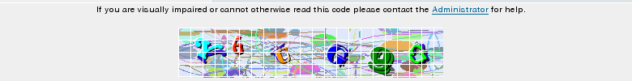

Advanced Visual Confirmation
Advanced Visual Confirmation (AVC) is much better than the standard Visual Confirmation. However, it also fails:
- in case of the default settings, bots pass AVC;
- humans often can't decode the image and register.

I can't read this AVC code
Once I tried 5 times to enter the code correctly. Also, I regularly got complaints from the users. Therefore, I switched off AVC.
Recommendation: don't use Advanced Visual Confirmation, use Textual Confirmation instead.
Next: Let me introduce X****r
Prev: Visual Confirmation
Up: Preventing bots from registering. What doesn't work
Home: phpBB Antispam HOWTO